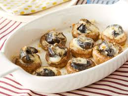

Garlic Escargot
Home

Description
This escargot recipe is made with tender escargots in mushroom caps, smothered with wine sauce and cheese. Nothing big and fancy, but I liked how it turned out, so I thought I'd share. They're easy to make, too!
Ingredients
- 1 (7 ounce) can escargots, drained
- 6 tablesoons butter
- 1 glove garlic, minced
- 20 mushrooms, stems removed
- 1/3 cup white wine
- 1/3 cup cream
- 1 tablespoon all-purpose flour
- 1/4 teaspoon dried tarragon
- 1 pinch freshly ground black pepper, or to taste
- 1/4 cup grated Parmesan cheese
Directions
- Preheat the oven to 350 degrees F (175 degrees C). Lightly grease an 8x8-inch baking dish.
- Place escargots in a small bowl and cover with cold water. Let sit for 5 minutes to remove any canned flavor they may have. Drain escargots and pat dry with a paper towel.
- Melt butter with garlic in a large skillet over medium-high heat. Add escargots and mushroom caps; cook and stir until mushroom caps begin to soften, about 5 minutes.
- Whisk together wine, cream, flour, tarragon, and pepper in a small bowl until well combined. Pour into the skillet and bring to a boil. Cook, stirring occasionally, until sauce thickens, about 10 minutes. Remove from the heat.
- Place mushroom caps into the prepared baking dish, with the tops facing down. Spoon an escargot into each mushroom cap. Pour sauce from the skillet over mushroom caps, then sprinkle grated Parmesan cheese over top.
- Bake in the preheated oven until cheese has turned golden brown, 10 to 15 minutes.